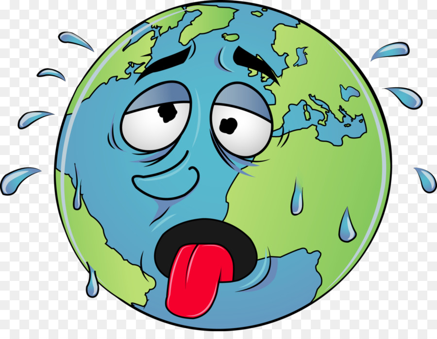

Principais Desafios

Consumo Execivo de Água
O consumo desenfreado da água gera desperdício, impossibilitando a distribuição de água para todos.
Poluição e Degradação das Reservas Hídricas
Os despejos sem controle de poluentes denigre a qualidade da água, impossibiliatndo o consumo humano.

Ausência de Infraestruturas Básicas
Com a falta de redes de distribuiçao de água e coleta de esgoto, é impossivel levar saneamento básico para todos.

Mudanças Climáticas
Mudanças no clima que alterem o regime de chuvas podem provocar o aumento da ocorrência de eventos hidrológicos extremos, como inundações e longos períodos de seca.